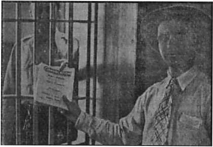
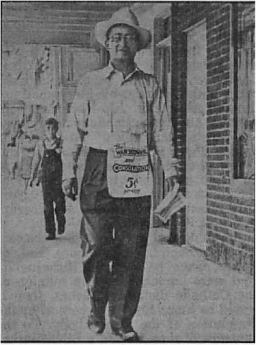
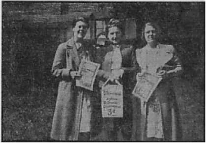

JOURNAL OF FACT, HOPE AND COURAGE
Responsible for present world condition; religion supported by Satan; its claims that it is persecuted are wholly false
What is the nature of the hell to which he hastens?
Defending the liberties; keeping after the violators of their oaths; halt the compulsory salutes
Modulation and Poise
“Sedition”
By Attorney General Biddle
Five Cents a Copy One Dollar a Year
Vol. XXIV No. 607 December 23, 1M2
$1.25 In Canada and Foreign Countries
Published Every Other Wednesday
Contents
Notanda
Detroit’s Crooked Police and Ex-Mayor 10
“Government Is Based on Morality”
The New Government
Witnessing at Corbin, Kentucky
An Honest Justice of the Peace “Thy Word Is Truth”
International Highway Around the World
Where Will Uncle Sam Get Rubber?
Automobile and Other Accidents
Presenting “This Gospel of the Kingdom”
Modulation, Poise, Audience Fear
“Sedition,” by Attorney General Biddle
Was FBI Balked by Fifth Column?
Justice in. Brandon, Mississippi
Wave of Car and Tire Thefts Feared
Published every other Wednesday by
WATCHTOWER BIBLE AND TRACT SOCIETY, INC.
117 Adams St., Brooklyn, N. Y., U. S. A.
Editor Clayton J. Woodworth
Business Manager Nathan H. Knorr
Five Cents a Copy
$1 a year in the United States
$1.25 to Canada and all other countries
NOTICE TO SUBSCRIBERS
Remittances: For your own safety, remit by postal or express money order. When coin or currency is lost in the ordinary mails, there is no redress. Remittances from countries other than those named below may be made to the Brooklyn office, but only by International postal money order.
Receipt of a new or renewal subscription will be acknowledged only when requested. Notice of Expiration is sent with the journal one month before subscription expires. Please renew promptly to avoid loss of copies. Send change of address direct to us rather than to the post office. Your request should reach us at least two weeks before the date of issue with which it is to take effect. Send your old as well as the new address. Copies will not be forwarded by the post office to your new address unless extra postage is provided by you.
Published also in Greek, Portuguese, Spanish, and Ukrainian.
OFFICES FOR OTHER COUNTRIES
England 34 Craven Terrace, London, W.2
Australia 7 Beresford Road, Strathfield, N.S.W. South Africa 623 Boston House, Cape Town
Mexico Calzada de Melchor Ocampo 71. Mexico, D.F. Brazil Caixa Postal 1319, Rio de Janeiro
Argentina Calle Honduras 5646-48, Buenos Aires Entered as second-class matter at Brooklyn, N. Y., under the Act of March 3. 1879.
Description of Espionage Act
♦ “(1) Whoever, when the United States is at war, shall willfully make or convey false reports or false statements with intent to interfere with the operation or success of the military or naval forces of the United States or to promote the success of its enemies,
“(2) and whoever, when the United States is at war, shall willfully cause or attempt to cause insubordination, disloyalty, mutiny, or refusal of duty, in the military or naval forces of the United States,
“(3) or shall willfully obstruct the recruiting or enlistment service of the United States, to the injury of the service or of the United States, shall be punished by a fine of not more than $10,000 or imprisonment for not more than twenty years, or both.”
Hawaiian Shark Played ’Possum
♦ Don’t get too frisky around a dead shark. He may not be dead. That seems to be the point in a story from Honolulu. Fishermen had bagged a shark and drew him alongside the boat. One of the fishermen leaned oVer the side to put the gaff into his dead playmate and the shark leaped up and almost bit his arm off. He was rushed to a hospital, and will keep his arm, but he won’t believe a shark is dead any more until he sees slices of him served under some fancy name in a high-toned restaurant.
Will Durant Fears for Democracy
♦ It may be we are living the last year in the history of democracy. It becomes clear we cannot fight a war by democratic means. We of this generation may never see again the right of free speech, press and assemblage we have enjoyed. When the war is over we shall have to keep a dictator because of the resulting depression.—Will Durant, famous author, in an address in Chicago.
“And in His name shall the nations hope.”—Matthew 12:21, A.R.V.
Volume XXIV Brooklyn, N. Y., Wednesday, December 23, 1942 Number 607
Religion’s Guilt (In Two Parts—Part 1)
TODAY the eyes of Americans are riveted upon the flames of war. Aggressors ravage Europe and Asia; while all true Americans yearn for the destruction of the butchers of both the Caucasian and the yellow race. Passion is ever high, and rational thinking is proportionately low.
And yet it is at such times of crisis that sobei; thought, unmoved by clamor and chaotic fear, is most required. The Scriptures declare, by none other than Christ Jesus, that these very events mark the establishment of His Kingdom (Matthew 24th chapter); but the affairs of the moment engross the attention of those who sweat under the increasing burdens. The promised Kingdom is totally disregarded by most. No regard is given to the Lord’s Word in seeking the solution because men have found the professional purveyors of religion (who claim the exclusive right to teach the Bible) the least trustworthy of all the “broken oars” advocated in the misery that has no boundaries. God’s Word gives the solution so much needed. Hence it will be profitable to consider why religion has so notably failed to point the way to man’s true guide.— John 17:17.
Vice has ever had the form of beauty! It was so in Eden. It is no different today. The greatest harm has often hid in soft, seductive word or figure. Dope, drink, and false-hearted woman have reaped their toll of unsuspecting victims who discovered all too late the snare had pierced them while the tempting morsel numbed intelligent judgment. Religion is more seductive than all else. (Hebrews 12:1) You, who have properly avoided all the common pitfalls, may yet have been religion’s prey!
Religion has posed as man’s benefactor ; claimed to be for his greatest good. It is time for an estimate of some of these claims. It must be evident to all that God’s blessing is not on religion, and the causes therefor are the business of everybody. Why has Jehovah condemned religion, and what facts today prove this condemnation entirely justified ? It may shock some to even consider the taking religion to task; and the seekers of pleasant reading may well turn back now. But let the searchers for the Bible answer hasten now before the black night of totalitarian oppression has swallowed up all outcry against her partner, religion.
Calm thinking is difficult today. Yet the thoughtful man will agree that it is far better to have his religious susceptibilities shocked than to lose his life. Avoidance of shocking the religious susceptibilities of others has not been productive of love between the nations of earth; steel and bombs are freely resorted to while soft words are continually advocated as regards religion. Why should religion be inviolable? Why should it not be examined for guilt in a blazing world which has entrusted its well-being to religious guides?
Examination of religion’s guilt is as necessary to learning the way to life as the investigation of the causes of a disease is to its cure. God provides life in His appointed way. (John 14:6) If one believes that way is through religion he must be daily and dismally disappointed. He must conclude that God is not all-powerful, as the Bible states, and that the future is hopeless. For such it will be profitable to consider the proof below, that religion, not the Lord, is responsible for the conditions that prevail today, and that freedom and life will follow God’s vengeance upon the institutions that have posed under His name. “For, lo, I begin to bring evil on the city which is called by my name.”—Jeremiah 25:29,33.
The great message from Jehovah “Peace-Can It Last?” covers thoroughly and most brilliantly the record and aspiration of the greatest of all religious institutions. In this article a brief glance will be taken of a few additional facts, because no speech nor even encyclopedia could contain the record of so many abuses of the public confidence, nor so many crimes upon unsuspecting innocents!—Jeremiah 2: 34.
Religion’s Performance Record
In the present world conflict nothing is more apparent than the failure of religion. It has unquestionably been a costly structure to build. That it also has a superstitious grip upon the people is proved by the circumstance that the many who have donated their money, time and energy to its edifices and expanse have never reasonably required the production of results. Claiming to be Christian, they have never required that religion follow in truth the example and teachings of Christ. Claiming to be all-powerful (the pope claims to be the vicegerent of Christ, the same Christ to whom God granted all power in heaven and earth), they have never required the exercise of this power in behalf of the people who support it. Claiming to be infallible, they do not even question the Papal support of such butchers as Franco and Hitler; and the pope’s refusal to dub the war against Nazism “a just war”, even though so requested by the president of the United States; nor his unholy alliance with the Shinto emperor of Japan. Not that such demands would be heard if they were made by the Catholic population; they would, of course, receive no consideration by the head of the Autocracy of Rome. But the strange grip of religion is reflected by the fact that the demands are never made.
A single enlightening exception to the rule of unquestioning acceptance is the cable sent to Pope Pius XII shortly before the invasion of Poland. It was sent from Chicago by a group of Polish Catholics requesting the excommunication of Hitler. The pope, then deeply involved in helping Hitler take over Europe, did not betray his embarrassment. No answer was given the Polish Americans, and it is stated reliably that because of this rebuff many Polish Catholics tore up the picture of the pope.
This event was but a faint ripple in the ranks of Rome. Do not the three hundred million Catholics continue to carry the religious load of vast proportions, and this without question? Except for- some supernatural power (which power will be disclosed with proof later) would not many of these supporters shop around for something that had a record of worth to support its extravagant claims? This religion obviously has not. The same millions who provide the money and sustenance for Rome’s power would, no doubt, have ceased long ago to buy another product with so bad a record. It is rotten, death-dealing provender. (Micah 6:14; Isaiah 28: 8; 2 Peter 2: 22) Therefore the source of its power over the masses must be sought elsewhere than in any value in itself.
A man would not buy decayed fruit just because his father did. Yet “the old time religion is good enough” for many generations. The source of this peculiar subjection could not be from Jehovah, because Jehovah invites men to reason with Him (Isaiah 1:18) and Christ Jesus declares that “the truth shall make you free” (John 8:32); and not subject therefore to the shackles and slavery of a system that exacts blind obedience. There could be only one source of such a seductive organization exercising authority over vast multitudes and so deeply rooted in the nations of this world. Only Satan the Devil could wish man turned from the worship of Jehovah by plunging him beneath the black waters of superstition. Attaching God’s name to the machinations of the Catholic priesthood is the final infamy of the adversary responsible for the institution and prosperity of religion. “Now is the judgment of this world.”—John 12:31,40; 2 Corinthians 4:4; John 14: 30.
The main reason why religion is to be destroyed is that it has upheld the Devil’s side of the controversy by defaming God’s name. Jehovah purposes to vindicate His name at the final battle, and this calls for the destruction of all forms of religion. The Catholic is considered here more specifically because it is the largest and most powerful. Though weighed in the balance and found wanting several thousand years ago, its destruction, like that of the mother organization, Babylon, was reserved for this day. It is to the unwitting comforters of this monstrosity, and for their salvation, that Jehovah addressed these words: “Come out of her, my people.”— Revelation 18:4.
When religion is finally overthrown, at Armageddon, those who support it to the end will ‘partake of her plagues’, that is, suffer the same fate. It is therefore of vital importance to learn of its bloodguilt and doom, its chances of escaping retribution, and whether any mercy will be shown it by the Lord. To the religionists of His day Jesus said: “How can ye escape the damnation of hell?” (Matthew 23:33) The proof is abundant that His words foretold a like punishment on the religious institutions which exist now, when He has returned, invisible and immortal, and established His promised Kingdom. (Matthew 6:10) Since every vestige of Satan’s realm, named “Babylon”, must be eradicated, it follows that its religious backbone on earth must be exterminated.—1 Corinthians 15:25; John 12: 48.
Religion Not Persecuted
No doubt there are some who feel that such destruction is not justified. For such it will be a revelation to observe how the Roman Catholic Hierarchy has fomented the present bloody conflict and fights on the side of the Nazi-Fascist-Pearl Harbor-Stabbers combine. Of course, the press generally portrays the Vatican Hierarchy as a benevolent institution, whose ceremonies are a “solemn and exquisite pageantry, deeply religious”, and whose aims are “peace”. Not discounting the outward appearance, which is undoubtedly impressive to some, let us examine the heart motives and the performance of the organization which has such an imposing front.
Jesus prophesied that all Christians would be persecuted. Matthew 24:9: “Ye shall be hated of all nations for my name’s sake.” “Yea, and all that will live godly in Christ Jesus shall suffer persecution.” (2 Timothy 3:12; Revelation 12:17) The rule has had full and terrible demonstration throughout the ages and at the present. Now in contrast with this, how has religion, particularly the Catholic, been dealt with?
The Catholic church is not persecuted in America. This scarcely needs proof, as it is too unquestionably true. But the following two circumstances are referred to: In a Protestant country, in name at least, opposed to Catholicism, the president has a diplomatic representative, Myron Taylor, sent to the head of Roman Catholicism, namely, the pope, whose office is located near the capital of a country with which we are at war; and in spite of this Papal affiliation with America’s enemies, the chief religious teacher of our army, that is, Chaplain Arnold, “the first Catholic to hold the chief’s place” (who carries the rank of brigadier general), was selected from this organization which takes orders from Italy. (Rochester Times-Union, January 6,1942) The president asked for “more religion”, and he seems to prefer the imported brand.
The Catholic church is not persecuted in Italy, nor in Spain. Fascists have had a concordat or working agreement with the pope since 1929. A Catholic apologist admits that the bishop of Taranto (Italy) calls the war against the United States “a crusade, a holy war”. (Gunner, in Lee’s Weekly, November 26,1941, Auckland, N. Z.) Of the Ethiopian campaign so notably “blessed”, the Christian Century remarks: “When Italy overran Ethiopia, which no stretch of the imagination could call a Catholic country, it became a protected preserve for Catholic missionaries.” (Issue of July 29,1942) The clergy of Rome have “blessed” so many planes that dropped “blessed” bombs on London that the famous English author, H. G. Wells, indited a burning protest entitled “Why Not Bomb Rome ?”
Spain is another country that has come in for much “blessing”. For the crushing of free Spain Franco was knighted to the Papal order of St. Gregory the Great. Some idea of the “honor” of this title may be gathered from the fact that ex-Judge Martin T. Manton, recently convicted (June, 1940) of selling justice on the United States federal bench, was also a member of this “distinguished” order. Just what may be expected in the United States when the “benevolent” Church of Rome finds this country worthy of a “blessing” can be learned from the fate of Spain, disclosed also by the Christian Century (same issue as above). “Franco’s Spain has annihilated the Protestant churches and has returned to the policies of Philip II [who promoted the Inquisition and sent the Armada against England, 1588].”
The Catholic church is not persecuted in France. When France was betrayed to Hitler by the Jesuits, and the puppet Petain was established as nominal head, the Papacy lost no time in showering this Catholic with praise. Recently, when so many Jews were attacked at the instigation of the Rome that created the “pogrom”, or riot, to deal with rival Judaism, and were just then being herded together for exile, Petain was indiscreet enough to say, “However, I have one consolation—the pope understands and approves my attitude.” (United Press dispatch from Vichy, August 1, 1942, quoted by that constant exposer of Catholic intrigue, The Converted Catholic, 229 W. 48th St., N. Y. C.) Following the above this paragraph appears:
No one is foolish enough to think that Petain was suffering delusions when he spoke of the pope’s explicit approval of his attitude toward the Jews. It is widely known that the Vatican hails the present Fascist rule in Vichy as the birth of Catholic France. This is what the Catholic International magazine of June, 1942, meant when it said: “Isn’t it all glorious? France has lost her navy and regained her souls!”
Now the question of controversy. Has not Hitler all but destroyed the Catholic church in Germany? No; the Catholic church is not persecuted in Germany. American newspapers, controlled by editors favorable to Catholic Action or members of Catholic Action, which is the English equivalent to Nazism, are largely responsible for this myth which has saved the Romanists much deserved criticism. The fact that there is no logical reason why Hitler, a baptized Catholic, should persecute his own “church” in his homeland, when he has promoted it in Spain, France, Belgium, and parts of conquered Russia, seems to occur to few of the American reading public. Hitler is an avowed friend of Serrano Suner, his brother-in-law Franco (to whom he sent the Condor Legion to assist in the destruction of the Republic), Mussolini, Petain, Norway’s Quisling, Belgium’s Leopold, and DeGrelle (who leads the Belgian Catholic Rexist Party), the infamous Joseph Tiso (Slovakian chief of state, who sold out Czechoslovakia, and Papal Chamberlain), all well-known Catholics.
In Europe the Hierarchy brags about the exploits of Hitler. Note that for several consecutive years all the Catholic bishops of Germany, assembled at Fulda, have issued manifestos lauding the triumph of the Fuehrer, and professing undying loyalty to the Nazi dictator. They urged, with considerable reason, that Hitler is freeing Europe from all enemies of Catholicism; that Catholics in even the conquered countries should unite behind the great champion of the Catholic church. Witness the success of such arguments by the fact that legions have been sent to assist Hitler’s Russian campaign by almost every country of Europe. There is no doubt that these nations are prevailed on to lend aid to Hitler by the oft repeated cry of priests in every land: “Hitler fights a holy war against Russia.” That the Catholic Church supports the German butcher with all her might is further proved by the evidence below.
Consolation has often pointed out that Hitler is a staunch Roman Catholic, and has printed pictures of his worship in Catholic churches. Journalists, such as Pierre Van Paassen (who wrote Days of Our Years and The Time Is Now), G. E. R. Gedye, and Lawrence Ferns-worth (Catholic), have disclosed the Papal participation in the bloodshed of Europe. Fernsworth and Van Paassen particularly cleared up the issues of the Spanish Rebellion, furnishing proof from the battlefields that the Catholic Church smashed the republic in order to regain her confiscated wealth; a wealth built upon the poverty and starvation of the masses, who had voted its confiscation that they might eat; and a wealth regained by the murder of millions of Catholic people. After this Hitler’s legions and Mussolini’s legions returned to devastate the rest of Europe.
The destruction of the Spanish Catholic republic serves to illustrate the merciless indifference of the Hierarchy to the Catholic people, who are her so-called “children”. This very disregard for Catholic life by the authorities of the “church”, Who in fact raised up the three bloody dictators Franco, Hitler, and Mussolini, has given some color to the assertion that the Catholic church is being persecuted. In other words, the Catholic Hierarchy, led by Pope Pius XII, supports the men who inflict sorrow and bloodshed upon the Catholic people. “Her children” are nothing to the Papacy when she decides that the death of a few million will advance her interests, such as was the ease in Spain.
Again, Hitler’s destruction in 1933 of the Catholic Center Party of the Reich is pointed to as evidence of persecution of the “Church”. On the contrary, this act is proof that the present Papal authorities are in the control of the Jesuits, the espionage agents and secret army of Rome, and bent upon extermination of all liberal elements within this vast system, such as the democratic Catholic Center Party, which lost its existence nine years ago. On this point says the well-informed Converted Catholic magazine (October, 1942, issue):
Pius XI cleared the way for Hitler’s abolishment of democratic government by dissolving the powerful Catholic Center Party in Germany. It should also be noted that, behind the later flimflam of Hitler-Vatican rifts, the present pope has at all times refused to condemn Hitler, much less excommunicate him from the church or renounce the Nazi concordat which he himself negotiated with Hitler when he was papal nuncio to Berlin.
According to the same authority, Fritz Thyssen admitted he and other Catholic tycoons poured millions into the coffers of Hitler in the hope of restoring the “Holy Roman Empire”. (“I Paid Hitler”) Note the following two paragraphs also:
In 1933 the Vatican was the first sovereign State to put the stamp of approval on Hitler by entering into a solemn agreement with him right after he established a dictatorship that shocked the sensibilities of the world. Hitler established his Nazi party in Munich, the most Catholic city in Germany. Goebbels, Himmler, Roehm, Von Papen, Seyss-Inquart, Buerckel, and other pillars of Nazism are Roman Catholics, and are openly listed as such in the official Wer Isfs (Who’s Who) of Germany.
Of Hitler’s intense admiration for the Catholic church, of which he is an acknowledged member in good standing (and also listed as such in Wer Ist’s), there can be no reasonable doubt. Apart from Hitler’s own statements on the Catholic church, there is a footnote on page 365 of Hitler’s Mein Kampf which says: ‘Raushning (cf. His Revolution des Nihilismus) has pointed out Hitler’s deep respect for the Catholic Church and in particular for the Society of Jesus’ (i. e., the Jesuits).
In addition, an editorial note on page 69 of the Reynal and Hitchcock edition of Hitler’s Mein Kampf states that “Hitler . . . was born a Catholic.”
“Positive Christianity” is the Jesuit name for aggressive Catholicism in its most rabid form. Hitler adopted for Nazism the policy and methods of the terrible Jesuits, and teachings of his master manifest themselves in his slaughter of the Jews, the Masons, Jehovah’s witnesses, and the refinement of torture in his concentration camps. He therefore merely assumed the execution of the plans and purposes of the blasphemous “Society of Jesus”. Hitler is therefore the Jesuit scourge of Europe, dedicated to the crushing of all opposition to their age-old schemes for world domination.
To offset these well-known facts, which the Hierarchy does not dare deny openly, she is now able to speak through many supposedly unbiased publications in the United States. The Hierarchy has vast holdings in America, and she reaps a rich revenue from Catholic American supporters. At the time when the president asked the pope to declare the war against Nazism “a just war”, and was refused by a “polite 'No’ ”, he seemed to intimate that this revenue might be withheld. It is to blind Americans to her guilty part in the carnage of Europe that the press is constantly fed stories of persecution of the “Church”, which is the very opposite of the facts, as all newspapers well know.
Examples of this servility are the recent articles entitled “Hitler’s New Scapegoat—the Catholics”, in the February 23 (1942) issue of the picture magazine Look (which James J. Murphy uncovers as trite propaganda, in his astute expose “The status of Catholicism in Nazi Germany”, in The Converted Catholic, April, 1942), and the Saturday Evening Post’s “Hitler Can’t Do Business with the Church” (September 26, 1942). Hitler has always done business with the “Church”, “business” in blood, in which only the merciless Rome could engage. All the concordats or ‘"business agreements” are still in force between the Vatican and the gangsters.
It can now be understood why the American reading public professes amazement and incredulity that Hitler is in league with the pope. The newspapers of this land are so completely in the hands of Catholic editors or have, for a price, so absolutely submitted to Catholic censorship, that even when a damaging dispatch finds its way accidentally into one edition it is carefully deleted from other editions. The writer once requested a two-month-old issue of the New York Journal-American, which had contained the picture of German priests instituting mass in conquered parts of Russia “for the first time” since Bolshevism took charge, and was told that no copies of the Journal more than one month old were available. Had the request been for one of Hearst’s editorials the rule would, no doubt, have been relaxed. The well-known case of the destruction by Franco of 110,000 Bibles appeared in the early morning edition of the New York Times of October 6, 1941, and was deleted from the second and following editions.—Elton Groves. [The foregoing disclosures, that religion is a false guide; that it is, by its centuries-old record, the opposite of Christianity; that it is not persecuted, either in America or in Italy, Spain, France, or Germany, will be a revelation to many. And they will wish to know why the stories of persecution are so continually spread, without any regard whatever for the facts; what is the real situation in Japan and other countries; what the people must now do in their greatest of all predicaments; and what shall be religion’s end. All this is set forth in the next issue of this magazine.—Ed.]
Progress in Dehydration
♦ Considerable progress has been made in the dehydration of foods for the armed forces overseas. The prices paid for the dehydrated vegetables f.o.b. factory were, for potatoes, 31c per pound; turnips, 45c; carrots, 47c; cabbage, 73c. Two of the Canadian dehydration plants are in Nova Scotia, and one each in Ontario and British Columbia. If the war continues and the submarines continue their depredations, it seems almost essential that dehydration be speeded up and made general, at least for such transported foods as are largely water.
1,000 Miles West of Montreal
♦ A thousand miles west of Montreal, away up a hundred miles north of the most northern bend of the shore of Lake Superior, there were found some years ago some Norse weapons that indicate that the Vikings traveled that way 400 years before Columbus discovered America. The presumption would be that these hardy travelers ascended the St. Lawrence and followed the northern shores of the Great Lakes to the place where the weapons were found. The last link of the Transcanada Highway passes near where the discovery was made.
A Busy “Liberator”
♦ Five times in nine days the same “Liberator” crossed the ocean between Montreal and Britain, and with the same crew. Then the crew had to have 72 hours’ rest. The same crew made eight round trips between Montreal and Australia in 90 days.
Dog Trained to Catch Pennies
♦ A Boston bulldog at Vancouver, British Columbia, has been taught to catch pennies in her mouth and deposit these in a tin can. When the tin gets full, or nearly so, it is turned over to the Red Cross. In this way, at last accounts, she had collected over $20. She seems to have entered into the spirit of the thing and to regard her business as important. She seems to understand conversations about her work, and to resent contributions that are thrown in such a way that she has to pick them up off the floor.
Aluminum or Newsprint, but Not Both ♦ The Canadian government has notified the United States production authorities that there is not enough hydroelectric power for the quantities of aluminum and newsprint that are desired, and so a choice must be made. If more aluminum is desired, and this Uncle Sam says he must have, then he must rest content with a smaller quantity of newsprint. Much of the newsprint goes for printing advertising matter and other material that is of no real benefit to anybody.
If You Were a Reindeer
♦ If you were a reindeer, and born at one of the reindeer stations 200 miles north of the Arctic circle, the chances are 9 to 1 that you would survive and that in a few hours after your birth you would be able to walk, and within a few days would be scraping about for moss, to help out on your milk diet. That is the way it works out.
Detroit’s Crooked Police and Ex-Mayor
❖ Jehovah’s witnesses could be treated fine at St. Louis by as capable a police force as is to be found in any American city. The year previous, at Detroit, they were treated badly. Since then .John Hamilton, councilman that used his influence to make it hot for them, was sentenced to three to ten years in prison as a self-confessed perjuror and bribetaker ; the former county prosecutor and former sheriff and 19 other politicians were convicted of collecting $100,000 of pimp money from gamblers and brothelkeepers, and out of 216 crooked police indicted by the grand jury the ex-mayor, Richard W. Reading, got the stiffest of twenty-five sentences: four to eight years in prison for conspiracy to obstruct justice and the protection of gamblers that have robbed Detroiters of an estimated $10,000,000 a year. If there is any real benefit in being on the Devil’s side, the experiences of the Detroit gang fail to disclose it.
Sight Restored After Eight Years
♦ Suppose you were totally blind in both eyes, and had been for eight years. Suppose one of your nine children took you out for a walk and suddenly jerked you toward the curb to keep you from being run over by a crazy motorist, and as he did so you fell on your hands and knees. You would feel rather blue, would you not? Maybe you would, but if when you stumbled and fell the light came back into one of your eyes, and then after a few days you saw for the first time the face and form of your little seven-year-old daughter, you would think God is good and there are some pleasant things in the world after all. Now, wouldn’t you? That happened to Frank J. Kubiak on the streets of Detroit. His wife felt so good about it that she cried for three days. Women are like that.
“Government Is Based on Morality”
♦ Governor Murray D. Van Wagoner, of Michigan, offers as his excuse for appointing so many clergymen to important state commissions and special boards (the same being a clandestine union of church and state), “Government is based on morality. Nothing else will work, or consistently promote the public welfare. So the advice of clergymen is pertinent and necessary, particularly in questions of broad policies and in humanitarian and social problems.” Assuming that to be true, is it good morals to appoint to public office men who claim to be teachers of God’s Word but do not believe the Scriptures to be divinely inspired? And is there any humanitarian problem greater than that of whether or not poor humanity, after suffering for a lifetime under politicians and priests and preachers, must face living with them forever or ‘staying indefinitely in “purgatory” or in “hell” ’ ?
Sojourner Truth Homes
♦ At Detroit the Sojourner Truth Homes were built for Negro occupancy and named in honor of a Civil War Negro woman leader. The construction was supervised by the United States Housing Authority and the homes were designated for Negro occupancy by the Office of Defense Housing Co-ordination.
The time came for the Negroes to move in. Criminals in the neighborhood burned a fiery cross, and when the police came they said they found 1,200 persons armed with knives, clubs, rifles and shotguns. The police knewT their duty, but with that finesse obtained from numerous higher-ups they carefully arrested 107 of the abused Negroes, and 2 other persons, to make a showing.
It is of record that the police, prior to the disturbance, made no effort to disperse the whites. The New York Times, in an Associated Press dispatch dated March 1,1942, made the illuminating statement: “The Federal Government first decided that the project was for Negroes, later specified white occupancy and finally reverted to its original decision.”
The police could jump into the Detroit river, for the amount of help they gave.
Getting Things Done at Detroit
♦ The army asked one automobile company to make a certain gun. The production executives were advised to study the methods in a government arsenal. At the arsenal, the army officer in charge explained that gunmaking was a special art. He proudly told the automobile makers that it required 400 man-hours to put one of those guns together. Each piece had to be filed and fitted by hand. Ten men working a 40-hour week were necessary to assemble the gun.
The automobile executives said if they couldn’t beat that the war would be lost. They applied machine-precision methods so that the parts of the gun would need no filing to fit. Parts were interchangeable—you could bring the parts up in bins and put the guns together without any last-minute filing down. This company is assembling the guns in 15 minutes instead of in 400 man-hours. That’s what I mean by making the machine goosestep.—Raymond Clapper, in the New York World-Telegram.
Scrap Kept in Storage
♦ At Zachow, Wisconsin, Albert Radtke, automobile dealer, got rid of his old cars each winter by towing them out on the ice of a near-by lake. In the spring the ice melted; and in this way, over a period of fifteen years some 500 cars went to the bottom. Now they are valuable for their scrap and are being fished out and salvaged at an average of $15 each. A farmer has a cable stretched across the lake, with a grappling hook suspended from it. A tractor on shore brings the cars to land after they have been hooked and brought to the surface.
Holy Spiritual Church Folds Up
♦ The Holy Spiritual Church of Michigan has folded up. The “Reverend” Yoga Roy thoughtlessly sold the piano and all the chairs for $10 and treated $118 in funds for a future convention to what may be described as a great disappearance act. The bishop [that’s what he admits he is] got into trouble for collecting $86 from one of his flock to get her son out of the Ionia State Reformatory, and then failing to deliver the goods, that is, the son. The judge on the bench convicted him of larceny by trick; the lady who owns the church says the bishop can’t pastor, can’t preach and is just no good, all of which is doubtless true. But the bishop, who says he has been preaching theology for 46 years, says that he is just as good as any other bishop (which is probably true) and that he resigned as pastor because his flock wanted him to select and bless policy numbers from the pulpit.
Plugged Fire Extinguishers
♦ Detroit discovered that the fire extinguishers had been plugged in several of the public schools where defense workers are trained. The plugging had been done by mechanics. One of the plugged extinguishers exploded while being examined.
The Swastika Waves in Dublin
♦ Ireland’s worst enemy is at Vatican City, and it is for that reason that the swastika and the Fascist tricolor wave over the German and Italian legations in Dublin. German butchers and housekeepers have been gradually withdrawn and their places taken by Nazi agents. Abandoned parachutes are often found; also, suspicious-looking and -acting persons with plenty of money in tattered trouser pockets. If Britain is ever invaded, the chances are that it will be via Eire. But meantime there are 150,000 loyal Irishmen in the British forces, and more than that number in British factories, though no mention of these is ever made in the Irish press.
Quick Action by Competent Men
♦ August 21,1942
Federal Bureau of Investigation, Abilene, Texas.
Gentlemen:
Last Sunday evening I sent you the following night letter by Western Union: “Federal Bureau of Investigation Abilene, Texas.
“Through misunderstanding Sheriff McAdams of Abilene is holding Catalina Escobar and daughter Rita and two boys named Trevino, all Mexican Christians. They are Jehovah’s witnesses engaged in Biblical educational work in Merkel, distributing the well-known Watchtower and Consolation magazines and are mistakenly and wrongfully detained. They are working in conjunction with Abilene and Sweetwater companies of Jehovah’s witnesses; are honest and faithful to the Bible teachings. I know them personally, and assure you of their integrity. Refer the matter to you as properly informed men for investigation, respectfully requesting their immediate release in harmony with instructions from Mr. Francis Biddle, of the Department of Justice at Washington, recently issued to officers throughout the nation.”
Your promptness in ordering the release of these innocent people is very commendable, and Jehovah’s witnesses in this locality know that their confidence was not misplaced when referring this matter to you for attention. The Watchtower Bible and Tract Society, Inc., of Brooklyn, New York, publisher for Jehovah’s witnesses, was engaged in Christian educational and charitable work long before many of us were born— in fact, it has been engaged in announcing the kingdom of Christ for more than sixty years. During the past nine or ten years a distinctly patriotic service has been rendered by it to the American people by publication of a continuous warning against the encroachments of the wicked totalitarian dictators who are striving for world domination. The above-mentioned Society, in presenting this timely message, has called attention to the only real hope of mankind, which is God’s Theocracy. Due to the malevolence of Satan, misguided persons are led to oppose this good work and cause trouble by encouraging false arrests and other methods of opposition. Jehovah’s witnesses are not criminals, but law-abiding persons, and expect to continue their public witnessing as heretofore.
Assuring you on behalf of Jehovah’s witnesses of appreciation of your just action in the above matter, I am sincerely yours, B. R. Kent.
The Bewilderment of O’Grady
♦ While engaged in the street distribution of The Watchtower, officer O’Grady took me to the station, where I was told that I must get a permit. As no one mentioned my staying, I returned to my work. Again officer O’Grady accosted me, and took me to the station, and I was informed that I should appear in court the following Monday to stand trial. As I was released on my own recognizance, I returned to my work. Along comes O’Grady. I am taken to the station for the third time and required to give bond for six dollars, which I did. In court the prosecuting attorney learned about the Supreme Court decisions and about a case now pending in the high court in this state. He then asked the judge to continue the case for ninety days, awaiting the decision of the State Court of Appeals, and we informed him that the work must continue; to which the judge and attorney agreed. O’Grady looked bewildered.—Mrs. R. E. Gilliam, Kentucky.
All pupils of the Miami (Fla.) Kingdom School here shown are Theocratic publishers, and all but three have been baptized. The book Children, which the little folks are holding, is used as a text for reading in all grades.
Witnessing at Corbin, Kentucky
♦ I was tried yesterday, July 10,1942, and had a jury trial, and learned afterwards that three of the jurors were preachers. The prosecuting attorney was one I had witnessed to the day before in trying to get a postponement of trial. He was affected by what I told him and he and the judge kept passing the buck as to who should decide as to postponement. But they refused postponement and the trial came off as scheduled.
I was in jail five hours last Wednesday before I got bond. When the prosecuting attorney started to talk to the jury he said he did not feel well; was sick, as he could not sleep all night thinking about the case, and, I guess, our conversation. He seemed favorable at first, but, as is noticeable in so many of these men, he suddenly became violent and one could plainly see the action of the demons. Said anyone who did not like these laws should get out of the country, etc. After my trial they unjustly read warrants for the arrest of the rest of the party. Their bond was fixed at $100 each. Mine was fixed at $200. The girls were in jail about six hours yesterday before they got bond, and their trial comes up next Tuesday.
Corbin is just one of those places from which we will have to shake the dust off our feet. Even a good share of back-calls and Children studies have faded out.
These officials know they are handling a very different class of people and they appear very nervous and fearful and hesitant as to what to do, and then the demons take possession and they carry out what they are told to do. A lawyer’s wife to whom I witnessed about two weeks ago was called as a witness for the court, but she said before court she was for us and they did not call her.
I am glad now that we stuck to Corbin to the last-ditch fight, as this witness through a packed court and front-page newspaper account is a final witness which could not otherwise have been accomplished, and better than I have ever been able to have a part in giving before in any other town.—Gilbert Frank Smith.
An Honest Justice of the Peace
♦ We three special publishers, Charles Zitko, Ralph Falbo, Jr., and myself, are at present working the business section of Charleroi, Pa.
On the morning of May 27, while at work my brother Ralph entered a beer saloon and began to play the phonograph for the proprietor. While the record was playing two men who were drinking went to the rear of the saloon and got a flag and demanded that Ralph salute the flag while they held it. Ralph told them that he had not come for that purpose, but to preach the gospel of God’s kingdom, and then he walked out. When he walked out of the place the two men followed Ralph out and began calling him vile names and also said to him, “Heil Hitler, you s of a b——Ralph did not give any answer and in the meantime Charles and I and my other brother Salvatore, who is a company publisher, returned to the car, which was parked near by. These two men proceeded to the ear and began
‘I was in prison, and ye visited me.’
—Bakersfield, Calif.
Thirteen-year-old Jonadab at Leicester, England
to gather a mob. They took their coats off and their glasses and said they would get us.
We at once got into the car and went to the police station and requested that the police give us protection. One of the police was sent with us to the scene of the trouble. The two leaders of the mob had returned to the beer saloon. The police entered the saloon and obtained their names and addresses and gave them to us. We asked the police officer to make an arrest of the two men, but he refused. The police suggested that we go to a justice of the peace and have a warrant sworn against these men. The justice of the peace refused to do such duty because we have previously had much trouble in this city in doing the work.
We then went to the town of Bentleyville, Pa., to a justice of the peace and had a warrant sworn out. The justice told us that about 19 men went to his place the night the warrant was served,
Street witnessing at Casper, Wyoming
including a constable from Charleroi, and told the justice of the peace that if we would win they would give plenty of trouble in Charleroi and threatened our lives.
The next night, May 28, we had the hearing. When the defendants came in for the hearing about 35 big husky men all wearing flags came marching. We thought their threats would there be carried out, but, by God’s grace, His protection was with us and no trouble started.
While the hearing was going on some of the men made threatening remarks, at which the justice of the peace stood up and told them to remain silent and to keep their mouths shut or else he would throw them out. The justice of the peace told them that he was a Catholic but he was there to uphold the law, and he did. He also told the defendants that even though they believed in saluting the flag and he did too they had no right to interfere with our work and to try to compel us to salute the flag. Then he told them of the Supreme Court’s decisions upholding our work.
He found the defendants guilty and charged them $19.50 fine and costs or fifteen days in jail.
The beer saloon proprietor paid the bill and stated to the justice of the peace that the next time we work his place he will mash the phonograph over our heads, to which the justice of the peace replied, “Go ahead and try; I’m looking for business and I can use the money too.”
We have continued our work and can see the Lord’s protection over His people.—Nick Falbo, Pennsylvania.
Common Sense in Oregon
♦ At Coquille, Oregon, Mrs. Hazel McKibben and Mrs. Jack Dolan, members of the “Sixth Column” organization of their city, had one of Jehovah’s witnesses arrested for circulating information about Jehovah’s kingdom. They just couldn’t bear to have any reflections made against their “church”, but when the case came into court the recorder of the city had sense enough to tell them, “This is the only country left where there is freedom of speech, and we want to keep it that way.”
(To be continued)
Happy lassies at Manchester, England, Pioneer home. Note strips of paper on windows, to prevent flying glass in air raids.

FOR a long time religious leaders of the organization into which dictator Hitler was baptized have taught that the punishment for the wicked, those who disobey God, and especially those who do not belong to the religious organization, is everlasting torment or torture in a hell burning with unquenchable fire and brimstone. Many have been frightened away from studying the Bible because of that terrible religious doctrine. Many have thought God to be responsible for such religious teaching and have refused to believe in Jehovah God and His Son, Christ Jesus, because of it. It is another religious doctrine of Satan the Devil who blasphemes Jehovah God and seeks to bring reproach upon His blameless name.
The religious teaching responsible for the “eternal torment” theory and by which Satan has blinded religionists is the deceptive teaching that the dead are still conscious after death as human creatures. This is not supported by the inspired Bible, however. When an innocent sheep dies, there is nothing of it that survives in consciousness. When a bloodstained man in the highest position of honor in his political party, such as Hitler, dies, refusing to understand concerning Jehovah God and His purpose and persecuting Jehovah’s witnesses for refusing to disobey God, then Psalm 49:11-20 applies to such tyrannical dictator, namely: “Their inward thought is, that their houses shall continue for ever, and their dwelling places to all generations; they call their lands after their own names. Nevertheless man being in honour abideth nob: he is like the beasts that perish. . .. Like sheep they are laid in the grave; death shall feed on them; and the upright shall have dominion over them in the morning; and their beauty shall consume in the grave from their dwelling. . . . When he dieth he shall carry nothing away: his glory shall not descend after him. . . . Man that is in honour, and understandeth not, is like the beasts that perish.” To which the apostle Peter adds his testimony: “But these, as natural brute beasts, made to be taken and destroyed, speak evil of the things that they understand not; and shall utterly perish in their own corruption.”—2 Peter 2:12.
Anything that perishes cannot be conscious, cannot be in existence, and, of course, cannot be immortal. If the human soul were immortal, as the religion of the Catholic dictators teaches, then it would be conscious somewhere after the dissolution of the human body. To the contrary of that, the Holy Bible teaches that those who die are never again conscious unless they come under God’s mercy and His redemptive provision by Christ Jesus and are resurrected during the thousand-year reign of the King Christ Jesus. Let the inspired Scriptures themselves speak, showing that the human dead are unconscious:
Psalm 6: 5 reads: “In death there is no remembrance of thee: in the grave who shall give thee thanks?” Thus is shown that they have no memory while dead. Psalm 115:17 reads: “The dead praise not the Lord, neither any that go down into silence.” Hence they could not speak while dead and break the silence.
The human dead cannot breathe, think, or feel. Hence God’s Word stands as a warning to all fanatical followers of totalitarian dictators: “Put not your trust in princes, nor in the son of man, in whom there is no help. His breath gbeth forth, he returneth to his earth; in that very day his thoughts perish.” (Psalm 146:3,4) And Psalm 104:29 adds: “Thou takest away their breath, they die, and return to their dust.” A person when unconscious does not feel. This is illustrated by the fact that when a person is taken to a hospital for an operation the surgeon puts the patient under an anesthetic, puts him to sleep so that he cannot feel during the operation. Hence concerning the dead it is written: “The living know that they shall die: but the dead know not any thing. . . . Also their love, and their hatred, and their envy, is now perished.” (Ecclesiastes 9:5,6) Being unconscious, they know not anything when dead. Hence to the ones alive on earth who desire to make the most of their lives to the honor and glory of God it is written: “Whatsoever thy hand findeth to do, do it with thy might; for there is no work, nor device, nor knowledge, nor wisdom, in the grave, whither thou goest.” (Eccle-siates 9:10)> Or, to quote the Catholic Douay Version Bible: “For neither work, nor reason, nor wisdom nor knowledge shall be in hell, whither thou art hastening.”
It was the Redeemer Jesus who said: “God so loved the world, that he gave his only begotten Son, that whosoever believeth in him should not perish, but have everlasting life.” (John 3:16) The opposite of everlasting life is for one to perish, and here in the Savior’s words is proof conclusive that death means the perishing of all human sinners unless redemption is received through Jesus Christ by faith and obedience. This would absolutely disprove the religious doctrine of consciousness of the dead, and it disproves also the religious falsehood of the immortality of the human soul.
Concerning such ones as come under the redemptive merit of Christ Jesus, death is spoken of in the Bible as a sleep, for the reason that Jehovah God by Christ Jesus will in His due time awaken all such dead ones in the grave and will give them an opportunity of life. The Bible abounds in expressions referring to such dead ones as asleep. A few of these expressions are: “David slept with his fathers, and was buried in the city of David.” (1 Kings 2:10) “And they stoned Stephen, calling upon God, and saying, Lord Jesus, receive my spirit. And he kneeled down, and cried with a loud voice, Lord, lay not this sin to their charge. And when he had said this, he fell asleep.” (Acts 7:59, 60) “After that, he [the resurrected Jesus] was seen of above five hundred brethren at once; of whom the greater part remain unto this present, but some are fallen asleep. And if Christ be not raised, your faith is vain; ye are yet in your sins. Then they also which are fallen asleep in Christ are perished. But now is Christ risen from the dead, and become the firstfruits of them that slept.” (1 Corinthians 15: 6,17,18, 20) “I would not have you to be ignorant, brethren, concerning them which are asleep, that ye sorrow not, ... even so them also which sleep in Jesus will God bring with him [in the resurrection].”—1 Thessalonians 4:13,14.
Concerning wicked oppressors of mankind and who oppose Jehovah God it is prophesied: “They are dead, they shall not live; they are deceased, they shall not rise: therefore hast thou visited and destroyed them, and made all their memory to perish.” (Isaiah 26:14) Though Hitler has never been excommunicated from his religious organization there exists no so-called “Purgatory” for him to go to after death. And as for those who receive of Christ’s redemption, we must conclude from the Scriptures that the human dead are wholly unconscious from the moment of death and continue so until such future time under God’s established Kingdom as He may be pleased to awaken them out of death and give them an opportunity of life. Thus and so it is stated by the Redeemer Christ Jesus, at John 5: 28, 29. “Marvel not at this: for the hour is coming, in the which all that are in the graves [Gr. mnemeio'n—-memorial] shall hear his voice, and shall come forth; they that have done good, unto the resurrection of life.”
THE Bill of Rights, whose 150th anniversary we are to celebrate Monday, December 15 [1941], was not originally a part of our Constitution. This will sound strange to many who have not been close students of American history, but it is a fact nevertheless. Says the librarian of Congress:
“The Constitution, written at the Federal Convention in the summer of 1787, did not contain a specific declaration of individual rights. In the opinion of the delegates such a declaration was unnecessary; it would either reaffirm rights already existing, or it would merely prohibit the national government from interfering with them.
“Nevertheless, when the draft was submitted for adoption, it was discovered that many shared the view of Thomas Jefferson that a ‘bill of rights is what the people are entitled to against every government on earth, general or particular ; and what no just government should refuse, or rest on inference.’
“Massachusetts, Virginia, New York, and other states ratified the Constitution, but with the recommendation that a bill of rights be added. This recommendation was accepted by the First Congress, in the form of twelve proposed amendments, which were passed on September 25, 1789. Of these, ten were declared ratified on December 15,1791....
Defend and Preserve
“They are today ‘ingrained in our American natures’. They are worth defending, preserving, and advancing at every cost and by every means. The anniversary of their adoption is therefore an anniversary well worth celebrating. . . . Celebrations must proceed spontaneously from the people’s sense of gratitude for the privilege and protection of rights which are at once personal, imprescriptible, and inalienable.
“It will be a time for the renewal of faith—faith in the doctrine of human liberty, faith in the principles by which we govern and are governed.
“It will be a time too for remembering —for remembering that in other parts of the world these privileges and protections are denied, and for remembering that where they are denied neither human liberty nor human decency and self-respect survive their loss.
“It will be a time finally for pride— pride in our citizenship in a free nation, conceived in freedom and by freedom’s strength brought to the foremost greatness of the earth.”
But in our exultation at this moment over the Bill of Rights we must not forget that it has never functioned fully. During the century and a half since it came into being its guaranteed freedoms have been trampled many times. Nothing is to be gained by blinking this fact.
Of course no human documents are observed one hundred percent. There is a popular fallacy that passing a law or adopting a constitution is sufficient. This is not true. Laws don’t enforce themselves. Constitutions don’t operate from their own power. They are in the last analysis but scraps of paper—useful as norms of conduct, but absolutely dependent upon people for their enforcement.
Three Different Views
A study of the period covered by our Bill of Rights will make plain the point we are stressing. Read Prof. Leon Whipple’s The Story of Civil Liberty in the United States if you would know the truth of the matter. Relative to this subject he says: “What did the liberty guarantees mean? They did not seem particularly clear to anybody—nor do they yet! They did not mean the same thing to different factions, and they did not mean the same thing to anyone very long.
“There were three general views which have persisted roughly ever since. The conservative wanted them interpreted legally, along the English tradition, and not adding many new ideas from the Revolution. The people wanted them interpreted practically, as they had been evolved in the Revolution, first, as the means of freeing themselves from tyranny; second, as the necessary instruments of self-government. The rare libertarian wanted them interpreted philosophically, as an ideal of spiritual and intellectual freedom looking toward the future, and now at least roughly expressed in words.”
Power and Civil Liberty
Prof. Whipple maintains that “who ever has power has civil liberty”. From a realistic standpoint he is unquestionably right. The ultimate power in a democracy is the power of an enlightened and an aroused public opinion. Therefore, in order to have a decent observance of the Bill of Rights, we must educate the people as to the value of the liberties guaranteed, and the necessity of their seeing to it that those liberties are respected. To this end groups like the American Civil Liberties Union need to be constantly on the job.
Sam Jones, the Southern evangelist, used to say, quoting the Bible: “‘The wicked flee when no man pursueth,’ but they make a lot better time when someone is after them.” So also when lovers of freedom form vigilance societies like the A.C.L.U. and everlastingly keep after recalcitrant officials who violate their sacred oaths of office by trampling the Bill of Rights, and others who treat these fundamental freedoms lightly, then something happens. Courts pay attention to the doctrine of freedom; policemen are careful not to exceed their authority; vigilantes desist from their unlawful activities; and the general level of freedom is raised.
We must have freedom if we are to have progress. Everyone who thinks accepts that axiom. Room for improvement is the biggest room in the world, someone has suggested. But we can’t move on into that room under dictatorship and suppression. There must be freedom. The trial and error method must be in vogue. The suggestion of all sorts of plans and new ideas must be permissible. Otherwise we have life bogging down into rust and stagnation.
So, on this 150th anniversary of the Bill of Rights, let us dedicate ourselves anew to the principles contained in the document—not with mere lip service, which is so easy to offer, but with life service in a never-ending campaign to make liberty regnant in all the land.
Jehovah’s witnesses
Not since the days when the Mormons were so atrociously treated, back in the decade following 1833, have members of any religious sect in the United States been so terribly persecuted as have Jehovah’s witnesses during the past year and a half.
Following a survey made recently by the National Office of the A.C.L.U., it was found that some [335] instances of mob violence in 44 states, involving about 1500 men, women and children of Jehovah’s witnesses, had taken place during 1940. Many assaults have occurred in 1941, although of late they have not been as frequent as during the height of the hysteria a year ago.
When the German blitzkrieg swept western Europe the super-patriots of this country, allegedly looking for fifth columnists, turned upon Jehovah’s witnesses. American Legionnaires were for the most part instigators of the vigilante attacks and other kinds of opposition which these people have suffered. Even policemen and sheriffs’ deputies basely co-operated with the mobs or did nothing to prevent violence, despite the fact that such officers are solemnly sworn to protect everybody’s religious liberties as guaranteed by the Bill of Rights.
Flag Saluting
Jehovah’s witnesses have been persecuted for various reasons. In the first place, they are zealous in propagating their faith by means of house-to-house visitation. Then, too, they have made vigorous verbal attacks upon one of the highly organized religious groups in this country. The violent persecutions which they have undergone during the crisis, however, have been prompted largely by their refusal to salute the American flag. According to their conscientious belief, saluting the flag is virtually idolatry, contrary to the teachings of the Biblical commandment which forbids bowing down to graven images.
They teach their children the same doctrine, and so the children decline to join in the flag salute at the public schools. This lays them open to the charge of disloyalty, and in many communities where super-patriots are active such children have been expelled from the schools. Here in southern California Jehovah’s witnesses’ children have been turned out of schools in El Cajon, 29 Palms, and several towns of northern Santa Barbara county.
Sometimes the parents of the expelled children are charged with contributing to the delinquency of their own offspring, and in a few instances the children of such parents have been taken away from them and committed to institutions by the courts. But this extreme method of procedure has been frowned upon by the higher courts when the cases have been appealed. This happened in New England, and thus a precedent has been set which has checked somewhat extreme measures of this kind.
Warren Rules Against J. w’s
The other day, however, Attorney General Warren of this state ruled that children who have been expelled from school for refusal to salute the flag can be made wards of the Juvenile Court if parents do not provide privately for their education. Said the attorney general: “If he [the parent] is not willing to do so [meaning abide by the rules governing school childremas to flag saluting], he forfeits the privilege of having the public schools educate his child, but in turn must furnish private instruction under the compulsory education law.” The parent can be prosecuted for a misdemeanor, according to Warren, if it can be shown that he is in league with the child and is encouraging his attitude.
Following the publication of the attorney general’s opinion, it was refreshing to read this editorial, entitled “Time for a Halt”, in the Los Angeles Times of November 24, 1941:
“Time for a Halt”
“Atty. Gen. Warren’s ruling that children expelled from school for refusing to salute the flag may be made wards of the Juvenile Court if their parents fail to provide private schooling for them is no doubt correct as a matter of law. It indicates, however, that this flagsalute business has gone to absurd lengths and that it is time to call a halt.
“It is about time the State recognized that patriotism cannot be compelled by law; and that while the right of States to require salutes to the flag has been established, it is a right that should not be exercised in regard to children.
“To make technical juvenile delinquents of the children of conscientious objectors to the flag salute is to place an unjust stigma upon them, which may gravely hamper them in after life.”
Thoughtful Americans who are free from prejudice will heartily endorse this editorial. They will also endorse the sensible statement on flag saluting issued recently by Dean Edwin A. Lee of the U.C.L.A. School of Education, commenting on the Times editorial. He said:
Dean Lee Speaks Up
“May I commend the editorial in today’s Times concerning the recent ruling of the attorney general relative to children who refuse to salute the flag.
“The important consideration in this matter is that children shall salute the flag spiritually, whether or not they do it physically. To compel a physical salute in no sense guarantees true reverence for the flag and all for which it stands. In some cases, compulsion may contribute to inner revulsion and defeat that which the salute is devised to develop.
“It seems to me that educators all too infrequently exalt the spirit over the letter of the matter. I know of one case in which a wise principal gave to a child whose religious scruples forbade saluting the flag the responsibility of assisting in the raising and lowering of the flag. The devotion with which this task was discharged was evidence of a spiritual salute far more significant than any purely physical gesture. I know of another principal, faced with a similar problem, who made the lad involved the official bugler for the ceremony of raising the flag. Again the pride with which the duty was performed was evidence of a love for the flag and the nation over which it waves.
“Love of country cannot be compelled; it must be won. Wise educators who use their imagination can easily devise dignified methods of meeting the spirit of the law for the very small group who have been given a publicity out of all proportion to the importance they deserve. Truly wise educators will also be mindful of the fact that for all children the salute to the flag may easily become mechanical and spiritless, and accordingly they will constantly seek to make the ceremony dignified and meaningful. Only by so doing will true love of country result from what is otherwise a wave of the hand and a meaningless mumbling of words.”
Be Sensible
It is high time that we came to our senses regarding this matter of flag saluting. Jehovah’s witnesses are not disloyal Americans. In devotion to this country they exhibit as great interest certainly as the average American, and probably greater. They are not given to lawbreaking in general, but lead decent, orderly lives, contributing their share to the common good. They are willing to pledge allegiance to this country. According to their own published statement they say they will make the following pledge:
“I respect the flag of the United States and acknowledge it as a symbol of freedom and justice to all.
“I pledge allegiance and obedience to all the laws of the United States that are consistent with God’s law, as set forth in the Bible.”
What more could be asked of them reasonably? Why is not such a pledge entirely sufficient to cover the needs of patriotism unless one is inclined to fuss at mere ritualistic performance?
We of the American Civil Liberties Union have defended Jehovah’s witnesses because we believe that they are the victims of a pseudo-patriotism which is not approved by the majority of Americans when properly understood. We appeal to all of you who read this article to do your utmost, therefore, to create an enlightened public opinion that will accord to members of this sect a square deal in times like these and will bring to a stop the cruel persecutions which have been directed against them.— The Open Forum, Los Angeles, California, December 13, 1941.
Not Entirely Unprofitable
♦ The business of working for the government is not entirely unprofitable. Mr. Farley, not so long ago a teamster engaged in hauling brick up at Stony Point, later a manager of prize fights, and still later national chairman of the Democratic Party, bought the Yankees for $4,000,000. Some of this money he must have made while he was postmaster general for the New Deal. And the New Deal has spent enough money that a mere $4,000,000 looks like a very small amount.
Asiatic Languages to the Fore
♦ To prevent Japan from seizing and governing all Asia, educators in the United States are now prepared, in dead earnest, to teach Japanese, Chinese, Malagasy, Arabic, Malay, Siamese, Swahili, Russian, Turkish, Pidgin English, Hindustani, Kurdish, Persian, Iraqui, and other Asiatic tongues.
THE international highway around the world is coming and is on the way. The highway to Alaska is already open; the one to Chile and the Argentine is being built, and the Russians have built about 5,000 miles of a new road system which, but for the war, would have reached East Cape, 56 miles from Alaska, by 1942. The water in Bering strait is only 50 fathoms deep, and is likely to be crossed sometime either by bridge or by tunnel.
In the short space of six months the United States army, backed by unlimited funds and trainloads of equipment, shoved the road through from Dawson Creek via Fort St. John, Fort Nelson, Watson Lake, White Horse, Dawson, Boundary and Big Delta as far as Fairbanks, Alaska, a distance of about 1,500 miles; and so the $12,000,000 highway to Alaska has become a reality. In the 4,000-mile route it passes through some of the finest scenery imaginable. Great lakes are brought to view, a new grand canyon, and magnificent mountain scenes. Without a doubt there will be immensely valuable gold strikes along the route. It will pay for itself in a little while, and will be useful for moving large numbers of troops in a hurry. The writers and others are noticing that it is only 56 miles across Bering strait to Asia, and that if the highway were shoved on through to connect up with Russian supply lines, here would be a practical way to get aid to the only country that, thus far, has shown its ability to stand up against the Pacelli-Hitler combine now overrunning the world.
The Pan-American highway from Fairbanks, Alaska, to Rio de Janeiro isn’t quite finished, but will be nearly so by the time this is published. There is a 300-mile stretch below Panama City not yet surveyed, and a few other smaller gaps, but these were being rapidly closed by work being done by funds supplied by the United States (to Nicaragua, Costa Rica, Panama, Ecuador, and Paraguay). The Republic of El Salvador recently completed the largest suspension bridge in Latin America, a 1,350-foot bridge across the Lampa river. Between Peru and Brazil there are two routes, one via Chile and the other via Bolivia, and both go around through Argentina and Uruguay en route to Rio.
Sometime the people will drive from New York to London, Capetown, Singapore or Buenos Aires, as they may desire. What fun the world will have!
From Damascus to Baghdad
♦ It used to take a month to cross the 540-mile desert that separates Damascus from Baghdad, but now the trip is made by bus in 18 hours for a total cost of $40 a passenger. The buses, which are aircooled, leave about 4: 00 p. m. and arrive about ten o’clock the next morning. Travel is by compass. The buses, built in America, cost $50,000 each. The proprietors of the line, Norman and Gerald Nairn, of New Zealand, also operate freight trucks between these the two oldest cities in the world, and have maintained the service for some 20-odd years.
Pennsylvania Turnpike Big Success
♦ You have to travel over the Pennsylvania Turnpike only once to know that it is a big success. It obliterates the Allegheny mountains by nine tunnels, cuts off 21 hours’ driving time between New York and Pittsburgh, and in the first year of its operation took in about $3,000,000, which is at least 10 percent more than had been anticipated. It is expected to pay for itself in seventeen years. The turnpike carries 7,000 vehicles a day, most of them for long distances, 100 miles or more.
NORMALLY the United States uses about 600,000 tons of raw rubber a year. The production of synthetic rubber, which is said to be superior to the natural gum, was 12,000 tons in 1941 and will reach 80,000 tons in 1942. It is figured that it would cost $500,000,000 to raise the synthetic rubber production to 300,-000 tons, would use great quantities of alloy steel, copper and machine tools, and would take two years. The production of synthetic rubber will be pushed; that's sure. And it looks like the best bet of the lot, to get the needed rubber.
The Firestone Rubber Company has recently begun planting rubber groves in Liberia. Despite all these sources of supply, the rubber situation is bad now, and is going to be much worse ere long.
The United States News, May 15,1942, claims that officials who are informed of all the facts say that, once the massproduction stage is reached and once processes are refined, it is going to be possible to produce synthetic rubber at a cost of 5c per pound or less. Meantime, America has been paying 22c a pound to get natural rubber.
Where else can Uncle Sam get rubber? In 1912 Brazil was producing 45,000 tons a year, but the shipments dwindled to nothing with the cultivation of rubber trees in Malaya and the Netherlands East Indies. Rubber experts believe that there are 300,000,000 wild rubber trees in Brazilian jungles, and that if the natives were paid high enough prices many of them could be made to help out.
Also, there is a plan for planting 450,000 acres of guayule -plants in the Southwest in the spring of 1943. It cannot be planted before that time, because there is not enough seed in existence.
Also, 15,000,000 rubber seeds have been planted in Latin American countries, but the seedlings will not yield rubber for four or five years.
Uncle Sam has 33,000,000 cars and trucks and simply must have rubber to keep them moving. Japan has virtually all the cultivated rubber trees, and this cuts off almost the entire supply. So, as soon as possible, there will be synthetic rubber, lots of it. The many millions of rubber trees now growing wild in the Amazon jungles will probably have to be tapped, no matter what the cost. Other supplies will come along in due time. Meanwhile Uncle Sam may have learned that it is well not to carry all his rubber in one basket.
In the Tire Emergency
♦ In the tire emergency a Carbondale, Ill., taxi company uses the 16-inch variety of Ford or Chevrolet tires and then buys the second-hand worn-out tires of the next larger size. The good tires are then deflated and both casing and tube are placed within the old casing. When reinflated the tire has a protective covering that lasts for hundreds or thousands of miles.
Another way of getting around the tire emergency is to go back to horses; but they have mostly been eaten and there are not many to be had. When the railway express company, which once had 15,000 wagons, turned horseward they found they had but 6 wagons left; that only three manufacturers knew how to make horse collars; harness makers had lost their specifications, and horse-shoers were as hard to find as preachers or priests that know anything about G-od’s purposes.
Tubeless Tires Prove Usable
♦ At Tulsa, Oklahoma, J. B. McGay is spinning safely along on a rubber tire that has no inner tube. He rubber-cements his tire to the rim, seals the hole with an old-type valve stem, applies the air rapidly, tests the tire in a water tank, patches it if it needs patching, and away he goes, and successfully too, he says.
TO GO via the gas route, run your automobile engine in a closed garage or sit in a closed parked car with the engine running; pay no attention to smells of gas around your house; if you do try to locate a gas leak be sure to use matches or a candle; use tubing to connect gas heaters; have gas flames burning low in the room in which you sleep. It may take a few years, but if you stick to these rules the man with the sad countenance and long wooden box will be at your place sure.
America did not quite get up to her schedule Of sacrificing 100 lives a day by automobiles in the year 1940, but she was coming along. There has been an increase every year in the number killed, and it won’t be long now. The 366 days of 1940 saw 34,500 lives snuffed out, and it needed only 1,900 more to bring it up to the 100 per day standard. Drunken drivers and drunken pedestrians accounted for 26 percent of the fatalities, and on that day of the year, December 25, when the annual feast to the god Saturnus comes around, the proud record of 307 was made.
Last year, when the need of human energy and natural resources proved more desperately urgent than ever before, the American people proceeded to liquidate more of their number and to demolish more of their mechanical facilities than in any year since the introduction of the motorcar. In 1941 40,000 persons were killed and almost a million and a half were injured. Both totals are the highest in the history of the automobile. During the year there were more than a million accidents involving injury or death, and several million others involving property damage only. The record of death and injury is one that should leave every American with a sense of shame.
“Some of the increase in death and injuries can be laid at the door of drivers under-18 years of age and older drivers with less than a year’s experience at the wheel. Accidents also increased somewhat out of proportion in the 18 to 24 age group. Exceeding the speed limit was responsible for almost 42 percent of the fatalities. In no other year since the record has been kept has speed loomed so large as a factor in accidents. Two out of every three persons killed met death as the result of some reckless or illegal action on the part of the driver. More than 90 percent of all vehicles involved in fatal and non-fatal accidents were in apparently good mechanical condition at the time of the crash. More than 82 percent of all fatal accidents occurred on dry roads, and 87 percent happened in clear weather.”—“The Wreckord,” The Travelers News Bureau, Hartford, Conn.
In the United States in 1941 accidents took 101,500 lives, 40 percent by the automobile route, 32 percent in the home, 18 percent in occupations, and 10 percent otherwise. December was the most dangerous month for motorists in New York state, Saturday was the worst day in the week, and from 6 p.m. to 7 p. m. was the most dangerous hour. At New Rochelle, N. Y., a survey of 917 high-school students showed.that 57 percent had been in motor accidents, while 7 percent had been at the wheel when the accident occurred. Twenty-three percent of the industrial accidents were falls. Many workers were injured by being stepped upon.
Lend-Lease Trucks on the Burma Road ♦ The last heard of 43 American former taxi and truck drivers in Upper Burma they were patrolling thousands of miles of roads, repairing and salvaging 95 percent of the wrecked cars which strew the highways at the rate of 85 wrecks for every 50 miles of road. When the trucks cannot be salvaged, they are destroyed where they lie.
Judicial Discretion
♦ In the case of People v. Pfanschmidt, 104 N. E. 804, 262 Ill. 411, the court said:
By judicial discretion is meant sound discretion guided by law. It does not mean arbitrary discretion. (9 Am. & Eng. Ency. of Law (2d ed.) 473; 14 Cyc. 384) Judicial power is never exercised for the purpose of giving effect to the will of the judge—always for the purpose of giving effect to the will of the legislature; or, in effect, to the will of the law. [citing eases] Dividing what is just and proper under the circumstances of a ease is such judicial discretion. In all cases courts must exercise a discretion, in the sense of being discreet, prudent and exercising cautious judgment. . . . Abuse of discretion does not mean only the decision of a case by whim or caprice, arbitrarily, or from bad motive, but it also means that the discretion has not been justly and properly exercised in the circumstances of the case.
Justice in California
♦ The Escalon (Calif.) Times does not take so kindly to the Nazification of America, and says some things about an Escalon dairyman that must have brought not a few citizens of the community to use their heads in a time when few people have any to use and those who do have them are afraid to admit it. It said:
This dairyman was recently “arrested” or cited to appear before the dairy board. The same board sat as a jury on the hearing. The same board returned a verdict of guilty . . . guilty of selling milk with too much cream. The board then pronounced sentence—“add skim milk, reduce butterfat content or charge the customers more money.” If the defendant failed to do as ordered, he would have had his license to do business revoked, and his years of work in building up a business ruined. This seems a far cry from the days when the American people depended on a court and a fair trial. Far from the time when a man, under the Constitution, was considered innocent until proved guilty by a jury of his peers in open court. In a day but recently passed, this dairyman would have been arrested by the sheriff if he was charged by a customer of breaking the law. A jury would have decided his guilt, if any, and a judge would decide the case and assess the fine, if any. Today, under the new order, this dairyman was cited, and cited under penalty if he did not appear, by the board, his case was heard by the same board, the verdict, that he was selling milk of too high a standard, was rendered by the same board, and unless he agreed to comply with the verdict to sell milk with less butterfat, he would have had his sentence set by the same board. How would you like to be tried, judged and sentenced by the same man?
How Much Is a Bushel?
♦ How much is a bushel ? It depends on what state you live in, and what you are buying or selling. The United States bushel is a cylinder 18| inches in internal diameter and 8 inches deep, built to hold 77.6274 pounds of distilled water at a temperature of 39.8 degrees Fahrenheit and at 30 inches of atmospheric pressure. If you wish to purchase apples or potatoes in the United States you are supposed to get heaping measure. In some states a bushel is just so many pounds of potatoes, for instance, and the number of pounds may range from 46 to 60. Ouch!
Americans Are Americans
♦ Americans are Americans, be they black, white, red, yellow, brown, or speckled. That, in effect, is the decision of the Supreme Court in a case originating in Chicago. Negroes may purchase property wherever they can and live where they please, is the purport of the unanimous decision of the court, approving the opinion delivered by Justice Stone.
THE purpose of these articles is to teach one not merely to talk, but to say something of vital importance and say it effectively; this to the end that all may become more able ministers of the gospel. The talk should be presented in such a manner that the audience will do more than hear: they will listen, and will do more than listen: they will understand. Such a desired end will be defeated by a monotonous delivery of an otherwise satisfactory discourse. Monotony is caused by unvarying sameness in one or more respects: by continued uniformity of tone, intonation and inflection, by singsong rise and fall of pitch, or by sameness of pitch, tempo, volume or amount of emphasis. The interest of the hearers must constantly be kept alive and their attention held by various means. One means is proper modulation.
Modulation
What is modulation? It is melodious expression and appealing use of language by varying or inflecting the voice in a natural and pleasing manner. Modulation, when referring to speech, means to adapt the voice, in tone, pitch or other qualities of sound, to the theme so as to give expressiveness to what is uttered.
Misapplication of modulation, in which tone, pitch, inflection, tempo and emphasis are shifted with monotonous and irksome regularity and without any relation to the subject matter, results in a singsong delivery and seems insincere. Such misapplied modulation confuses the meaning of thoughts, whereas proper modulation gives thoughts their fullness of meaning and they are stated impressively.
It is this modulation, in part, that keeps the interest constantly keyed to the theme, both of music and of a spiritual song of praise to the name of Jehovah. If speaking on a subject of absorbing interest one may without modulation be able to hold the interest of a friendly and patient audience, if the talk does not last too long. Even then, however, after any appreciable length of time one would notice a loss of contact with his hearers. When this is sensed, change the tempo and pitch of talking; vary the volume of voice and degree of stress where it is appropriate to the material, just as most persons do unconsciously when engaged in ordinary conversation. Alternate slow, deliberate speech, by which one weighs each word, with appropriate periods of speeding up and speaking with fluency, and sometimes even rapidity. This keeps the attention of the audience alive, so that when one comes to the end of the talk it may be too soon for the listeners. In concluding one’s voice should have the ring of finality. One’s tone should convincingly close the subject and sometimes even ‘sit on the lid’.
Poise and Audience Fear
Poise is another essential to’ good speaking. It is a well-balanced state of mind, composure of emotions, calmness, even serenity amidst disturbing circumstances. How may one acquire poise? By gradual mastery of one’s self, words, voice, actions, by conscious repose. This should not be confused with any affectation, nor with apathy or mental indifference. Poise is controlled thinking before speaking or acting. One possessing it has a calm confidence and, in all humility, a certain sense of reserve power. He will know exactly what he is going to say or do every moment and he will waste no nerve energy in expressionless words and meaningless actions.
The greatest obstacle to developing poise is audience fear. Most persons have no difficulty in talking to individuals. When witnessing from door to door Jehovah’s servants are at ease, unembarrassed, unabashed, and their speech expressive. But when these same witnesses have to address a larger group, what happens? They are self-conscious, ill at ease, nervous. Their tension makes them awkward, they stiffen up and, like shipwrecked sailors clinging to a raft, “hang on for dear life” to the rostrum. Some of their best thoughts take flight.
What are some of the causes of this audience fear? One is initial nervousness. Such nervousness before or at the beginning of a speech is quite normal in all speakers. It is no ill omen and will soon disappear in the course of the introductory words. Delivery of the opening words in a slow, measured tempo will enable one to overcome this initial nervousness; and when one becomes tense during the discourse, he should ‘change gears’, slow down, lower the pitch, breathe deeper, pause at proper places, until he has regained poise and is ready to drive forward again.
Lack of confidence in your ability as a speaker is another cause of audience fear. The remedy for Jehovah’s witnesses is to be constantly mindful of ’the promises of the Almighty to help them to carry out their commission as His ministers. Believfe His assurance, “My grace is sufficient for thee: for my strength is made perfect in weakness.” (2 Cor. 12:9) Say with calmness and poise heretofore lacking, “I can do all things [including delivery of a lecture] through Christ who strengtheneth me.” (Phil. 4:13) It is erroneous to view your audience as mental giants. They are, doubtless, like you, of ordinary intelligence. If there are some of high worldly learning in the audience, keep in mind that their ‘old world wisdom’ is foolishness with God. “Thou through thy commandments hast made me wiser than mine enemies.”—Psalm 119 : 98.
Do not attempt to “speak up” to them by using their high-sounding expressions, nor by entering into their vain philosophies and falsely so-called “scientific” theories. If you entertain an exaggerated opinion about the learning of your listeners and this causes you concern, then have in mind that a person of real learning shows his wisdom by speaking simply, just as a person of material wealth shows culture and good taste by dressing simply. Use simple, plain and forceful language, as did the apostle Paul, who said his preaching was not with “enticing words of man’s wisdom”, “not with fleshly wisdom,” but “in simplicity and godly sincerity”. Again, he said: “We use great plainness of speech.” (1 Corinthians 2:4,5; 2 Corinthians 1:12; 3:12) A person of true wisdom uses simple expressions. Read Christ’s sermon on the mount. (Matthew 5, 6, 7) Follow these divinely-inspired examples.
When one of the Lord’s servants has opportunity to witness to a hostile audience, as is sometimes the case in court, he should remember Jehovah’s admonition, “Be not dismayed at their faces, lest I confound thee before them.”
Thorough preparation in advance will be one of the speaker’s best aids in attaining poise. It will give one confidence and assurance to speak. One who is lacking in poise becomes self-conscious, imagining he is the object of critical and unfriendly observations by the audience. The self-conscious speaker ceases to be himself. His undue concern as to what his hearers are thinking of him paralyzes his mental faculties, and the result is distress and confusion. Because of his lack of poise he assumes that the audience is picking him apart and jumping on his slightest error in expression or behavior. This assumption is not true.
Be unconcerned about what the audience thinks of you personally. Be completely absorbed in the subject matter; forget about yourself. The witness of Jehovah will keep in mind he is not judged by man. “Am I striving to please men? if I were still pleasing men, I should not be a servant of Christ.” (Galatians 1:10, A. R. V.) The Lord is no unfriendly critic, and He is the Judge of His servants.
Therefore have in mind that it does not matter at all what any man may think or say of you. All-important and vital is the approval and favor of the Most High. Never seek to please men. Endeavor to please Jehovah and His King, and then, so doing, you will necessarily please those who are devoted to the “Higher Powers”. “The fear of man bringeth a snare.” Do not fear your audience when giving a talk or you will be caught in this snare and stumble and fall.
Sharp Increases in Prices
♦ The North Bay Labor Journal (Santa Rosa, Calif.) of July 11, 1941, remarks with regard to price increases in all fields; even before the United States entered the war:
In most present-day cases sharp increases in prices have taken place on the retail end, where no corresponding increase has been paid to the original producer. The farmer does not begin to get any such increases as consumers are now being obliged to pay, nor do workers get pay increases commensurate with these price jumps. What has just been said is only a small portion of the evil effects of present-day skyrocketing of prices to consumers. While well organized workers are able to secure increases in wages and businessmen generally can jump their prices to absorb rising costs, the citizens with fixed incomes, the retired, who are living on savings, and the millions of unorganized workers and even the unemployed, who are in no position to make demands for wage increases, are all hit smack between the eyes with every price increase affecting them. Those hit the hardest and who are the most helpless to resist the crush of rising prices are those in the lowest income brackets.
Connecticut’s Permanent Plates
♦ In Connecticut, instead of motorists’ getting an entire new plate each year, only a small tab denoting the year is altered. The saving effected runs into the millions of dollars every year.
1943 CALENDAR READY
THE YEARTEXT
“0RO,« X... (uMujuetotd tjlizoiiyfi Jiim 3Rat QL’ ---dtamamA
All Christians bent on keeping integrity toward God will be strengthened by having that text daily before them during 1943. The Watchtower CALENDAR, now released, will enable you to do that. The theme picture in artistic color-work under the yeartext brings into sharp relief the situation facing humankind and in which faithful Christians must overcome. The Calendar pad names the new year’s Testimony periods, and also the special objectives of the intervening months. This service calendar is yours at 25c a copy; or five copies mailed to one address on a contribution of $1.00.
WATCHTOWER 117 Adams St. Brooklyn, N. Y.
□ For enclosed 25c contribution please send me a 1943 Calendar.
□ For enclosed $1.00 contribution please send me five of the 1943 Calendar.
Name..................................... Street .....................................................................................................
City State —..........................................................................................
THE following is from an editorial in the New York Law Journal, quoting from an address by Attorney General Biddle:
Traditionally America has always avoided the use of sedition laws. We have believed that they express the use of star chamber methods which we have always disliked—the persecution by the sovereign of opinions not palatable to sovereignty. Of course, war changes the picture—or at least adds a new consideration. Nothing must hamper the war—whether acts or words. The problem necessarily becomes largely one of wise administration.
The test, I believe, should be a practical one. Do the words really interfere with selective service or the behavior of enlisted men? Do they lead to violence, or resistance, or treacherous or subversive acts? If they do not—a matter of cool judgment—as a matter of policy I think it better to let inen talk, however critically or even maliciously. The experience of England has proved that. It is sensible to let men blow off steam—up to a point.
Accordingly, I have directed that no sedition indictments be brought without my prior express approval. That tends to curb the often overzealous United States attorneys. No sedition cases have been begun since the war.
Earlier in his address the attorney general had called attention to the fact that he was constantly being attacked or commended for what he said and did. Some found his policies not “tough” enough; others, that they were not sufficiently liberal. “These are emotional classifications,” commented the attorney general, “based often on our own prejudices or hidden disappointment.”
With reference to the treatment of alien enemies, of whom there are 1,100,000 in the United States, the attorney general said:
My “tough” critics would doubtless be satisfied only if I interned all of them. I have the power to do so, but I shall not. That would be profoundly unwise, let alone that it would be profoundly un-American. Many of those “enemies”—technically so classified—have sons fighting in the army and navy. There are many million Americans of German and Italian origin in our population who would be deeply shocked by and resentful of such treatment. And the effect would be severe retaliation on Americans living in Axis countries. We have arrested and will continue to arrest the potentially dangerous and the disloyal. The rest we shall let alone and continue to absorb into our American family.
, In the course of the war it is quite likely that groups of frustrated people, in an attempt to magnify their own importance or their own fears and prejudices, will take on the hood of the vigilante. It makes little people feel bigger to decry a religious or racial group, to attack the Catholics or the Jews or the Negroes or Jehovah’s witnesses or some other minority. The Nazi way of life, in so far as it can penetrate our shores, will encourage such activity.
Some such vigilantism is perhaps inevitable in a time of great national crisis; the strains and stresses of war bring out the worst as well as the best in men. But it is well worth noting that equally inevitable is the retribution which awaits both the enemies without and the betrayers within our democracy. The Federal Government is well prepared to deal with vigilantism. Within the Department of Justice the Civil Rights section has fought and will continue to fight to defend the rights and the liberties of all those entitled to the protection of our borders—citizens and aliens alike.
The attorney general concluded this portion of his remarks with a quotation from President Woodrow Wilson, who, in 1918, “delivered a stinging rebuke to the men of small minds and even less morals who debased American democracy by taking the law into their own hands.”
“No man who loves America,” President Wilson said, “no man who really cares for her fame and honor and character, or who is truly loyal to her institutions, can justify mob action while the courts of justice are open and the governments of the states and the nation are ready and able to do their duty.
“We proudly claim to be the champions of democracy. If we really are, in deed and in truth, let us see to it that we do not discredit our own. I say plainly that every American who takes part in the action of a mob or gives it any sort of countenance is no true son of this democracy, but its betrayer, and does more to discredit her by that single disloyalty to her standards of law and of right than the words of her statesmen or the sacrifices of her heroic boys in the trenches can do to make suffering peoples believe her to be their savior.”
No truer or more appropriate words, said Attorney General Biddle, could be spoken in the great crisis which faces our democratic way of life today!
Was FBI Balked by Fifth Column?
♦ Certain gentlemen who would like to shift responsibility for Pearl Harbor have been spreading the yarn that J. Edgar Hoover and the FBI were to blame for the navy being caught asleep on the memorable and tragic day of December 7.
However, as early as last spring, Hoover urged that he be permitted to arrest or at least oust from the Hawaiian Islands the 250 Japanese consular agents operating there.
Hoover argued that Japan didn’t need 250 consular agents in a little place like Hawaii in the first place. In the second place he produced concrete evidence that at least one of them had tried to get information on United States fleet movements.
Gen. Short, then in command at Hawaii, since removed, objected to Hoover’s plan. He said it would cause too much commotion. Nevertheless, Hoover persisted and took the matter over Gen. Short’s head to Washington. Secretary of War Stimson supported Gen. Short and nothing was done.
After Pearl Harbor, the Japanese consulate was taken over and its papers searched. Among them was found a code of signals by lights; so many lights would show that the United States destroyers had left Pearl Harbor; so many lights would indicate the battleships had left; another light arrangement would signal that the destroyers had returned, and so on. This code corroborated Hoover’s contention that the Japanese consular agents were the mainspring of Japanese espionage.
Note: Hoover actually caught two Japanese spies red-handed in the United States, but was forced by the State Department to send them back to Tokyo instead of placing them on trial. One was a full Japanese naval captain caught with United States naval documents in his possession, and indicted on Hoover’s evidence. The other was a Japanese language student attached to the Japanese embassy who was caught among the thirty-seven Axis spies indicted in New York through Hoover’s efforts. However, the State Department ordered his immediate release. His name was not even given to the newspapers.—Drew Pearson and Robert Allen, in “Washington Merry-go-round”, St. Louis Star-Times, January 6, 1942.
Drift from Constitution
♦ No development of government in a complicated age touches the roots of the American system more deeply than the tendency of pressure groups to influence legislation. What amounts to government by committees which instruct their memberships on how to write or telegraph their congressmen on every phase of law-making has grown up. Long almost imperceptible, this habit has reached such proportions that it constitutes a definite drift away from the American form of government.
Calling attention to and condemning this practice . . . may seem a bit strange to citizens who have got into the habit of telling their representatives in Washington just how to vote on every issue. Too many citizens have forgotten the historic bases of the American political system.
The framers of the Constitution had no system of absolute democracy in mind. They wanted a legislature “under the leadership of the wisest and best”. These men were to make up their own minds on the issues which came before them. There never was any intention that they should be subjected to floods of demands from those at home on what they should think, say and do about any particular piece of legislation. Were this method carried out to its logical end, neither congressman nor senator would be permitted to exercise his own judgment; he would become a mere messenger boy.
Giving representatives a free hand did not imply that they could ignore the wishes of those they were chosen to represent. Their terms of office were deliberately fixed for a short period so that they could be turned out if they did not meet the wishes of the majority of the electors.
Harassing congressmen in the vogue of today has about it the atmosphere that prevailed in Paris during the Revolution when the mob packed the galleries and overran the floor of the Legislative Assembly and threatened to place the head of the erring deputy on a pike. The current method is more genteel, but, if it continues to grow, just as dangerous to the republican traditions of government.
It is rather ironic that well-meaning people who want above all to preserve our government themselves contribute to undermining it by this practice. A motto for today, for the people as well as for the administration, would be: “Return to the Constitution.”—Cleveland Plain Dealer, September 19, 1941.
Justice in Brandon, Mississippi
♦ If you want a taste of ‘American justice’ in these days, visit Brandon, Mississippi. If you go there and identify yourself as one who loves God and therefore as one of Jehovah’s witnesses, somebody may hit you in the face with brass knuckles, and undertake to kill you. If you escape this and undertake to get the parties arrested, you will be the one that will be seized. The sheriff may visit you and explain to you that Brandon is not governed by the laws of the United States or of the State of Mississippi, but by unwritten laws. When you get into court the magistrate will press this point home, and if you undertake to quote the highest of all laws, as set down in the greatest of all law books, the Holy Scriptures, you may have screamed at you the statement, “If you quote one more word from the Bible, I will fine you $25 for contempt of court.” You may be told that you are innocent, but will have to pay the costs of being arrested and jailed for asking for the protection of the law, and you may hear a public prosecutor express his pleasure that an innocent Christian woman was struck in the face by her husband because she sought to prevent him from killing the man who sought the law’s protection. All this took place in Brandon in May, 1941.
Wave of Car and Tire Thefts Feared
♦ New York police uncovered a ring of automobile thieves that in ten years stole more than $500,000 worth of cars in New York state alone. The thieves had $25,000 worth of special tools, dies, numbering machines, notary seals, stamps, inks and other equipment and worked through crooked automobile dealers.
A fresh wave of car and tire thefts is feared. Every car-owner is urged to keep a record of the serial number of his tires and other vehicle equipment; to keep his car off the streets, and especially obscure streets; to keep them locked when not in use; to report persons meddling with vehicles, especially if a second car is present. Very seldom does a car have more than one flat tire at a time.
* The year 1942 has been a most eventful and thrilling year in the experiences and activities of Jehovah’s witnesses. You may now get a world view of such exploits and their lasting benefit to men of goodwill by reading the annual report as prepared by the president of the Watchtower Society. This comprehensive report is submitted with the hope that it may encourage and do good to some and that as others read it they may see their privilege of uniting with Jehovah’s witnesses now on earth and share in shining forth the light and hope of the NEW WORLD of righteousness under the rule of the great Theocrat Christ Jesus. This report is published in the 1943 YEARBOOK OF JEHOVAH’S WITNESSES, now off the press.
♦ Also contained therein are the yeartext for 1943 and explanatory comment thereon, together with a stirring text and comment for each day of the year. As to the courage, strength, joy and vision to be derived therefrom, and also as to the need and usefulness of such throughout the year by Christians, there is hardly any need of comment. Due to the limited edition a contribution of 50c per copy is asked for the 1943 YEARBOOK OF JEHOVAH’S WITNESSES
The 1943 Yearbook contains 416 pages, bound in beautiful royal blue cloth, attractively gold-embossed.
Please send me a copy of the 1943 Yearbook reporting- the activities of Jehovah’s witnesses. Submitted herewith is my contribution of 50c to aid in advancing the Kingdom message.
Name ..................................................
Street ..................................................
City....................... State......................
32
CONSOLATION